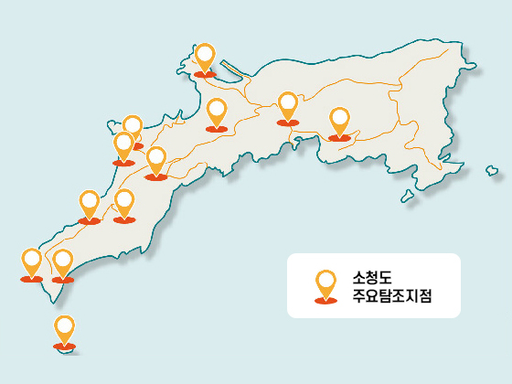
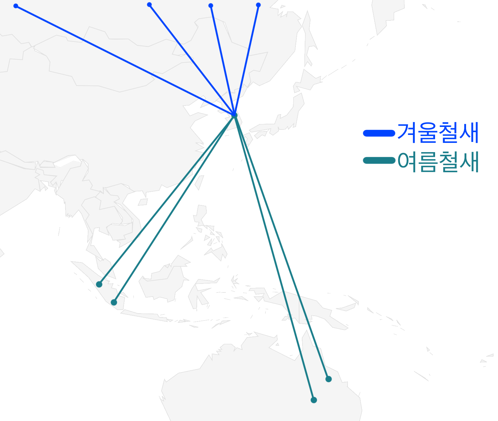
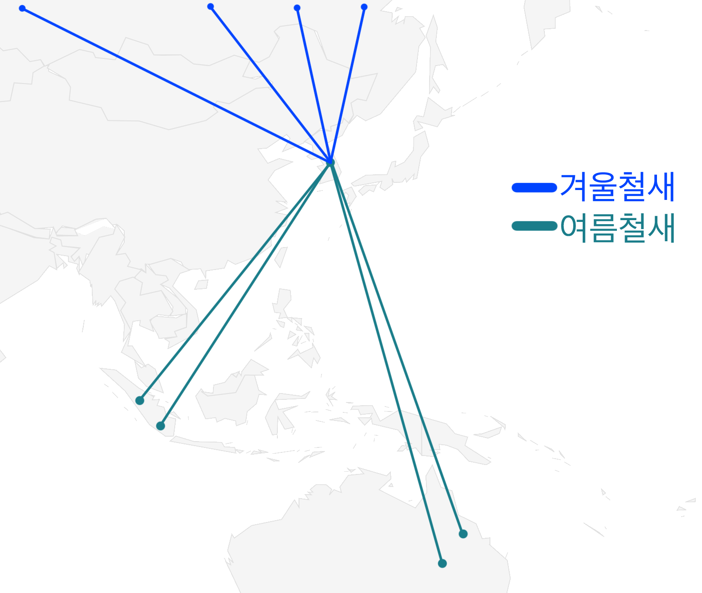

철새란 무엇인가요?
4계절이 있는 우리나라에서는 계절에 따라 다양한 새가 관찰됩니다.계절에 따라
이동을 하지 않는 새를 텃세라 하고, 계절에 따라 번식지와 월동지를 이동하는
새를 철새라고 합니다. 철새에는 여름철새, 겨울철새, 통과철새가 있으며,
이외에 길잃은 새가 존재합니다.
철새와 텃새는 명확하게 구분되나요?
겨울철새 또는 여름철새로 분류되더라도 그 중 일부는 번식지나 월동지로
떠나지 않고 텃새화하는 경우가 있습니다. 철새는 서식지의 기후와 먹이 변화에
반응하여 이동하는데, 환경의 변화에 대한 적응력이 높기 때문입니다.
철새는 왜 이동하나요?
철새의 이동은 계절변화 따른 기온과 먹이의 변화에 적응한 결과입니다. 새들은
먹이가 부족해지는 시기가 되면, 먹이가 풍부한 다른 지역으로 주기적으로
이동을 합니다.
철새연구는 왜 하는가?
철새를 연구하는 가장 중요한 이유는 생태계의 중요한 구성원이며,
생태계 변화의 대표적인 지표종으로서 조류를 보호하고 관리하는 것이건강한
환경을 지켜나가는데 기본이 되기 때문입니다
주요연구지역
소청도를 포함한 서해 5도 지역은 철새의 주요 경유지로 국제적인 중요성이
있는 지역입니다. 특히 소청도는 지형지질 및 경관이 수려하며, 다양한
멸종위기종이 서식하는 등 생태적으로도 보전연구가치가 매우 높은 섬으로서
국내 기록된 548종의 조류 중 325종 이상이 기록된 이동성 철새의 핵심적인
경유지입니다.

여름철새
-Summer Visitor
겨울을 동남아시아 등 따듯한 열대,아열대 지역에서 보내고, 봄이되면
우리나라에 찾아와 번식을 하고 여름이 지나면 다시 월동지로 이동하는
새입니다.
겨울철새
-winter Visitor
여름철새와는 반대로 우리나라보다 고위도 지역에서 번식을 하고, 늦가을부터
우리나라를 찾아와 겨울을 보내고 이른봄에 다시 번식지로 올라가는
철새입니다.
철새를 관찰하는 방법
새는 움직임이 많고 사람의 접근을 싫어하기 때문에 일정한 거리를 두고
쌍안경, 망원경을 통해 관찰해야 합니다.
새는 소음에 민감하기 때문에 새를 관찰할 때에는 조용히 해야 하며, 너무 눈에
띄는 화려한 옷을 입는 것을 자제해야 합니다.
1. 개체 식별
가락지에는 고유 번호나 정보가 새겨져 있어 특정 개체를 추적할 수 있습니다.
이를 통해 새의 이동 경로, 서식지, 생존율 등을 파악할 수 있습니다.
2. 이동 경로 추적
철새의 이동 경로나 계절적 이동 패턴을 연구하는 데 사용됩니다. 이를 통해
철새 보호와 서식지 관리에 중요한 데이터를 얻을 수 있습니다.
3. 생태 연구
새의 나이, 성장 속도, 번식 성공률, 먹이 습성 등을 관찰하는 데 도움이
됩니다.
4. 보존 활동
멸종 위기에 처한 새들의 개체 수를 모니터링하고, 효과적인 보존 전략을
개발하는 데 활용됩니다.
5. 환경 상태 평가
새는 생태계 건강을 나타내는 지표가 되기 때문에, 가락지 연구는 환경 변화와
오염에 대한 정보를 제공할 수 있습니다.
 
